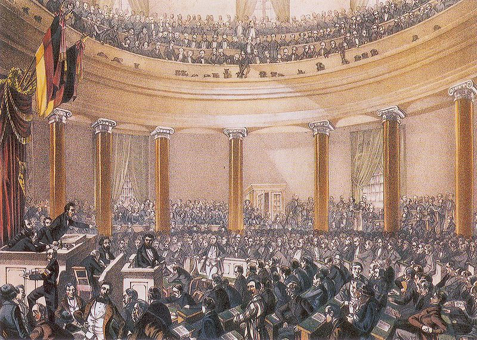

После Йенской катастрофы Фридрих Вильгельм III осознал, что только встав во главе
национального движения он сумеет избавиться от клейма слуги Франции и вернуть Пруссии ее
законное место в пантеоне великих держав Европы [51]. Но, как оказалось впоследствии, национальная идея была для прусского короля только средством и ни в коем случае не целью. Специфика прусских реформ 1807-1813 гг. заключалась в том, что их авторы придерживались разного понимания национального патриотизма. Если Гарденберг считал себя в большей степени
прусским патриотом, то Фихте, соратники Шарнхорста генералы Гнейзенау, Бойен, Грольман
и предшественник Гарденберга на посту прусского премьера Штейн были германскими националистами и сторонниками создания единого государства [52].
На фоне взрыва ненависти к Наполеону Пруссия постепенно превращалась в центр распространения пангерманских и республиканских настроений, что, конечно же, не могло не
пугать Фридриха Вильгельма III. Вернув себе власть в стране в 1813-1814 годах, он продолжил,
насколько то было возможно, вести реакционно-консервативную политику. Прежде всего удар
был нанесен по образованию – учебные программы в школах и университетах стали более консервативными, а либерально настроенные профессора были уволены. Вместо поощрения самостоятельности в мышлении теперь учителя стали навязывать ученикам принципы безусловной
верности власти и государству. Такая политика стала следствием Карлсбадских указов от 20
сентября 1819 года. Решающую роль в их подписании сыграл главный консерватор Германского союза – министр иностранных дел Австрии Клеменс фон Меттерних.
Промышленная революция в Пруссии шла быстрее и активнее, чем в других германских государствах: к 1840-м годам Пруссия была одной из самых индустриально развитых стран Европы.
Несмотря на то, что Карлсбадские указы были призваны укрепить влияние Австрии в
Германском союзе, в экономическом плане она постепенно стала уступать Пруссии. Последняя
быстро осваивала новые промышленные технологии благодаря основанию в 1821 году в Берлине Королевского технического института. Если изначально Пруссия заказывала машины в
Британии, Франции и Бельгии, то со временем стала создавать их сама. В 1834 году под прусской эгидой был учрежден Германский таможенный союз, в который вошли Бавария, Саксония, Вюртемберг, государства Тюрингии и Гессен. Его участники отменили взаимные таможенные барьеры и создали зону свободной торговли, а строительство железных дорог только
ускорило экономическую интеграцию данных государств.
Сельское хозяйство в Пруссии развивалось по особому «прусскому» пути. Фактически он
представлял собой компромисс между традиционными методами ведения хозяйства и новыми
тенденциями капитализма. Помещики-юнкеры продолжали оставаться наиболее влиятельным
классом прусского общества и являлись самыми убежденными сторонниками консервативной
политики правительства. Несмотря на рост влияния буржуазии к середине XIX века, ведущие
политические позиции в Пруссии, как и в России, продолжали принадлежать дворянству [53].
Александр I и Николай I, наряду с прусскими консерваторами, неоднократно призывали
Фридриха Вильгельма III ликвидировать ландвер. Народное ополчение, ставшее одним из главных результатов военной реформы Шарнхорста, теперь воспринималось как рассадник революционных настроений и угроза государственному строю Пруссии. И, стоит признать, у консерваторов были все основания опасаться ландвера, поскольку тот разделял идеалы буржуазии
и поддерживал объединение Германии на либерально-демократической основе [54].
Фридрих Вильгельм IV - король Пруссии в 1840-1860 гг.
В 1840-м году новым королем стал Пруссии Фридрих Вильгельм IV – любитель архитектуры,
сыгравший существенную роль в восстановлении Кельнского собора и родового замка Гогенцоллернов в Хехингене. Он прекратил преследования религиозных меньшинств, но в целом
проводил ту же консервативную политику, отклонив требование ландтага о принятии конституции. В марте 1848-го либералы предложили прусскому королю корону германского императора, поскольку авторитет Габсбургов в Германии постепенно падал. Взамен они лишь требовали согласиться с принятием конституции, ограничивавшей абсолютную власть короля.
Во время работы Франкфуртского Предпарламента, шедшей с 31 марта по 3 апреля 1848
года, обнаружились существенные разногласия между либералами и демократами. Если либералы выступали за сохранение монархии как гаранта стабильности буржуазно-бесклассового
общества и правового национального государства, то демократы предлагали создать федеративную республику по образцу Соединенных Штатов Америки с сильным парламентом и всеобщим избирательным правом [55].
Русский царь Николай I категорически не желал допустить появления в Германии единого либерального государства и, таким образом, потерять влияние на немецкие дела [56]. Он
настойчиво отговаривал Фридриха Вильгельма отклонить конституцию и прекратить шедшую
с Данией войну за Шлезвиг и Гольштейн. В конце концов, Фридрих Вильгельм отказался
сотрудничать с революционерами, а федеральные войска под прусским командованием ликвидировали либеральную «Германскую империю» и ее парламент во Франкфурте.

Заседание Франкфуртского парламента в церкви святого Павла. За трибуной Роберт Блюм - лидер левых демократов
Несмотря на все усилия короля и его правительства сохранить режим абсолютизма, Пруссия сделала большой шаг в сторону становления конституционной монархии. Ее основной
закон теперь гарантировал ряд гражданских свобод и неприкосновенность частной собственности, однако вместе с тем сохранял в руках короля большую власть и вводил трехклассовую
избирательную систему [57].
Такой баланс политических сил соответствовал доктрине «христианского государства»,
разработанной профессором права Фридрихом Шталем. Согласно ней, монарх должен быть
отцом нации и заботиться о нравственности подданных. В отличие от многих консервативных
монархистов, Шталь приветствовал наличие конституции, но полагал, что она должна быть
монархической по своему духу. Парламент, по его мнению, должен являться не местом политической борьбы, а гарантом народных прав и конституции [58].
Предпосылки глобальной европейской войны начали созревать ближе ко второй половине XIX века. Великобритания и Франция боролись друг с другом за колонии, в то же время
дружно предпринимая усилия по изоляции России в Чёрном море. Австрийская империя Габсбургов, бывшая лидером Германского союза, слабела под ударами внутренних восстаний и, в
то же время, стремилась вытеснить Россию с Балкан. Франция же жаждала реванша, возвращения господства в Западной Европе и "естественных границ" по Рейну, закрепленных за ней
в 1801 году.
Германский союз, бывший опорой всей неустойчивой политической конструкции
Европы, слабел также из-за усиления Пруссии. Весной 1849 года, в разгар революционных
событий в Германии, прусские дипломаты выступили с предложением создания альтернативного Германскому союзу консервативного объединения немецких государств. Инициативу
Пруссии в итоге поддержали лишь Баден, Мекленбург-Шверин, Ольденбург и мелкие государства Тюрингии. В это же время Австрия, Бавария, Саксония и Вюртемберг сформировали
Союз четырех королей, направленный на укрепление позиций Габсбургов в Германии.
Заседание сторонников Эрфуртского союза в церкви святого Августина
Создавая Эрфуртский союз, Пруссия рассчитывала присвоить в нем себе всю исполнительную власть [59], что уже напрямую противоречило праву Австрии председательствовать в
Германском союзе. В конце концов последняя, вместе с Россией, заставила Пруссию отказаться
от противодействия Габсбургам и признать по Ольмюцскому договору восстановление Германского союза в полном объеме. Для Пруссии его подписание оказалось столь тяжким и позорным, что в немецкой прессе данное событие получило название «Ольмюцского унижения».
Почти одновременно с этим она проиграла войну с Данией за Шлезвиг и Гольштейн, но мирный договор с ней, что интересно, был подписан в обход позиции Национального собрания.
Таким образом, Пруссия показала последнему реальный объем его влияния на германские дела [60].
Несмотря на то, что в 1850 году брату Фридриха Вильгельма IV принцу Вильгельму так и
не удалось склонить русского царя Николая к поддержке национальных планов Пруссии, та все
еще желала заручиться благожелательной позицией России по германскому вопросу. Через три
года, когда ведущие европейские страны образовали антироссийскую коалицию, что привело
к началу Крымской войны, Пруссия сохранила благожелательный нейтралитет.
В это же время Австрия двинула свои войска в Дунайские княжества, которые Россия
традиционно считала своей сферой влияния. Николай изначально не учел факта пересечения
сфер интересов России и Австрии на Балканах, потому данный шаг Вены стал для него тем
более неожиданным и предательским. Тем самым молодой император Франц Иосиф сразу же
испортил отношения с некогда ключевым союзником в Восточной Европе – сын Николая Александр II уже куда более благосклонно относился к объединительным планам Гогенцоллернов.